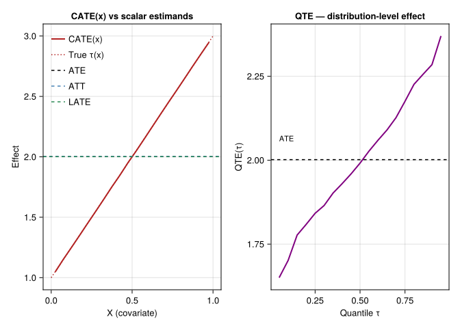

using DataFrames
using Distributions
using Random
using Statistics
using CairoMakie
using GLM2 Five Estimands on One DGP
Before choosing an estimator, we need to know the estimand. ATE, ATT, LATE, CATE and QTE are not five ways to estimate the same object. They are five different objects. Sometimes they are numerically close, but that is a feature of the data-generating process, not a general result.
Here I use one simulated data set so we can calculate all of them. The simulation is useful because we observe both potential outcomes. In real data we do not, which is exactly why identification assumptions matter.
2.1 The data-generating process
Each person has an observed covariate \(X_i\), an unobserved type \(U_i\), and a binary treatment \(D_i\). The instrument \(Z_i\) is a random offer. It changes the probability of treatment, but it has no direct effect on the outcome.
Random.seed!(42)
n = 20_000
X = rand(Uniform(0, 1), n) # observed covariate, in [0,1]
U = rand(Normal(0, 1), n) # latent type, unobserved
Z = rand(Bernoulli(0.5), n) # random instrument
# Treatment assignment: depends on Z (the instrument) and U (selection on type)
# Higher U → more likely to take treatment regardless of Z (always-takers)
# Lower U → less likely to take treatment regardless of Z (never-takers)
# Middle U → responsive to Z (compliers)
pD0 = @. clamp(0.10 + 0.20 * U, 0, 1) # P(D=1 | Z=0, U)
pD1 = @. clamp(0.10 + 0.20 * U + 0.50, 0, 1) # P(D=1 | Z=1, U) — adds 0.50
# ONE latent draw per unit, two thresholds: since pD1 >= pD0, this gives
# D1 >= D0 for every unit — monotonicity (no defiers) holds EXACTLY.
# (Drawing D0 and D1 with independent rand() calls would create defiers
# by construction, even though pD1 > pD0.)
V = rand(n)
D0 = V .< pD0 # potential treatment if not offered slot
D1 = V .< pD1 # potential treatment if offered slot
D = ifelse.(Z .== 1, D1, D0)
# Heterogeneous treatment effect: depends on X
# Y(d) = baseline + d * tau(X) + 0.3 * U + noise
τ(x) = 1.0 + 2.0 * x # the true individual treatment effect function
Y0 = 0.5 .* X .+ 0.3 .* U .+ randn(n)
Y1 = Y0 .+ τ.(X)
Y = ifelse.(D, Y1, Y0)
df = DataFrame(X=X, Z=Z, D=D, Y=Y)
first(df, 6)6×4 DataFrame
| Row | X | Z | D | Y |
|---|---|---|---|---|
| Float64 | Bool | Bool | Float64 | |
| 1 | 0.173575 | true | true | -1.64247 |
| 2 | 0.321662 | true | true | 1.29054 |
| 3 | 0.258585 | true | true | 2.52079 |
| 4 | 0.166439 | true | true | -0.00756264 |
| 5 | 0.527015 | true | true | 4.47846 |
| 6 | 0.483022 | false | false | 1.91673 |
In the simulated data we have Y0 and Y1 for every observation. That lets us calculate the true estimands directly. With real data, each observation only reveals one potential outcome.
2.2 The five estimands
2.2.1 ATE — average treatment effect
\[ \text{ATE} = \mathbb{E}[Y(1) - Y(0)] \]
ATE is the mean effect in the whole population. It compares the mean outcome if everyone were treated with the mean outcome if nobody were treated.
ate_true = mean(Y1 .- Y0)
@printf("ATE (population mean of Y1 - Y0) = %.3f\n", ate_true)
# What the integral over τ(X) should be: ∫(1 + 2x) dx on [0,1] = 1 + 1 = 2
@printf("Theoretical ATE = ∫(1 + 2x)dx on [0,1] = 2.000\n")ATE (population mean of Y1 - Y0) = 2.002
Theoretical ATE = ∫(1 + 2x)dx on [0,1] = 2.0002.2.2 ATT — average treatment effect on the treated
\[ \text{ATT} = \mathbb{E}[Y(1) - Y(0) \mid D = 1] \]
ATT is the mean effect for the units that actually took treatment. It differs from ATE when treatment selection is related to treatment-effect heterogeneity.
att_true = mean(Y1[D] .- Y0[D])
@printf("ATT (mean of Y1-Y0 conditional on D=1) = %.3f\n", att_true)ATT (mean of Y1-Y0 conditional on D=1) = 2.006Here ATT is close to ATE – and in fact the two are analytically identical in this DGP, exactly \(2.0\) in the population; the estimates above differ only by finite-sample simulation noise, not by any true gap between the estimands. The reason is mechanical: the individual treatment effect \(\tau_i = 1+2X_i\) depends only on \(X_i\), while selection into treatment depends on \(U_i\) (and the instrument \(Z_i\) below), and \(X_i\) is generated independently of \(U_i\) and \(Z_i\). Since treatment-effect heterogeneity is unrelated to who selects into treatment or who complies with the instrument, averaging \(\tau_i\) over the treated subpopulation or over compliers gives the same population average as over everyone – hence ATE = ATT = LATE = \(2.0\) exactly here. If selection (or compliance) also depended on \(X\), these estimands would diverge, since ATE, ATT, and LATE are different averages of \(\tau_i\) across different, non-identical subpopulations.
2.2.3 LATE — local average treatment effect (Imbens-Angrist)
\[ \text{LATE} = \mathbb{E}[Y(1) - Y(0) \mid D(1) > D(0)] \]
LATE is the mean effect for compliers, the units whose treatment status is changed by the instrument. Under the usual IV assumptions, the Wald estimator identifies this effect, not the ATE. Identifying LATE by the Wald ratio additionally requires monotonicity (no defiers): \(D(1) \ge D(0)\) for all \(i\). This DGP imposes it by generating both potential treatments from one shared latent draw \(V_i\) with ordered thresholds (\(D(z) = \mathbb{1}\{V_i < p_{Dz}\}\) and \(p_{D1} \ge p_{D0}\)), so no unit is pushed out of treatment by the offer. Raising the probability alone would not be enough: with independent draws for \(D(0)\) and \(D(1)\), about 3% of units would be defiers and the Wald ratio would no longer equal the complier mean.
compliers = (D1 .== 1) .& (D0 .== 0)
late_true = mean(Y1[compliers] .- Y0[compliers])
@printf("LATE (mean of Y1-Y0 conditional on complier status) = %.3f\n", late_true)
@printf("Share of compliers: %.3f\n", mean(compliers))
# Wald estimator from the data alone
wald = (mean(Y[Z .== 1]) - mean(Y[Z .== 0])) /
(mean(D[Z .== 1]) - mean(D[Z .== 0]))
@printf("Wald IV estimate (should match LATE): %.3f\n", wald)LATE (mean of Y1-Y0 conditional on complier status) = 2.004
Share of compliers: 0.460
Wald IV estimate (should match LATE): 2.004With heterogeneous effects, IV averages over the people moved by the instrument. In this example the Wald estimate matches the complier mean because \(Z\) changes treatment only for that group.
2.2.4 CATE — conditional average treatment effect
\[ \text{CATE}(x) = \mathbb{E}[Y(1) - Y(0) \mid X = x] \]
CATE keeps \(X\) in the estimand. In this DGP, CATE(\(x\)) is simply \(\tau(x)=1+2x\).
# Bin X and compute mean of (Y1 - Y0) in each bin
nbins = 20
edges = range(0, 1, length=nbins + 1)
centers = (edges[1:end-1] .+ edges[2:end]) ./ 2
cate_est = [mean((Y1 .- Y0)[(X .>= edges[k]) .& (X .< edges[k+1])])
for k in 1:nbins]
# Label by the actual bin centers (bin 5 = [0.20,0.25) has center 0.225)
@printf("CATE at x=%.3f: estimated %.2f, true %.2f\n",
centers[5], cate_est[5], τ(centers[5]))
@printf("CATE at x=%.3f: estimated %.2f, true %.2f\n",
centers[17], cate_est[17], τ(centers[17]))CATE at x=0.225: estimated 1.45, true 1.45
CATE at x=0.825: estimated 2.65, true 2.652.2.5 QTE — quantile treatment effect
\[ \text{QTE}(q) = F^{-1}_{Y(1)}(q) - F^{-1}_{Y(0)}(q) \]
(We index quantiles by \(q\) to avoid a clash with the treatment-effect function \(\tau(x)\).)
QTE compares the two marginal outcome distributions. It is the difference between a quantile under treatment and the same quantile under control. It does not follow the same person across the two potential outcomes.
qte_grid = 0.05:0.05:0.95
qte_est = [quantile(Y1, q) - quantile(Y0, q) for q in qte_grid]
@printf("QTE(0.10) = %.3f\n", quantile(Y1, 0.10) - quantile(Y0, 0.10))
@printf("QTE(0.50) = %.3f\n", quantile(Y1, 0.50) - quantile(Y0, 0.50))
@printf("QTE(0.90) = %.3f\n", quantile(Y1, 0.90) - quantile(Y0, 0.90))QTE(0.10) = 1.704
QTE(0.50) = 1.992
QTE(0.90) = 2.2892.3 All five estimands on one plot
fig = Figure(size = (820, 380), fontsize = 13)
ax1 = Axis(fig[1, 1], xlabel = "X (covariate)", ylabel = "Effect",
title = "CATE(x) vs scalar estimands")
lines!(ax1, centers, cate_est, color = :firebrick, linewidth = 2, label = "CATE(x)")
lines!(ax1, [0, 1], [τ(0), τ(1)], color = :firebrick, linestyle = :dot, label = "True τ(x)")
hlines!(ax1, [ate_true], color = :black, linewidth = 1.5, linestyle = :dash, label = "ATE")
hlines!(ax1, [att_true], color = :steelblue, linewidth = 1.5, linestyle = :dash, label = "ATT")
hlines!(ax1, [late_true], color = :seagreen, linewidth = 1.5, linestyle = :dash, label = "LATE")
axislegend(ax1, position = :lt, framevisible = false)
ax2 = Axis(fig[1, 2], xlabel = "Quantile q", ylabel = "QTE(q)",
title = "QTE — distribution-level effect")
lines!(ax2, collect(qte_grid), qte_est, color = :purple, linewidth = 2)
hlines!(ax2, [ate_true], color = :black, linewidth = 1.5, linestyle = :dash)
text!(ax2, 0.05, ate_true + 0.05; text = "ATE", color = :black, fontsize = 11)
fig
The left panel shows why the scalar estimands can differ. ATE averages \(\tau(x)\) over the whole population. ATT averages it over the treated. LATE averages it over compliers. CATE does not collapse the curve.
QTE, in the right panel, is different again. It describes how the treatment changes the outcome distribution. It is not a conditional treatment effect as a function of \(X\).
2.4 When the estimands differ
In the first DGP the scalar estimands are close because:
- \(X\) is uniform on [0, 1] (so ATE = average of τ over uniform \(X\) = 2)
- Treatment selection is on \(U\) (unobserved type), not \(X\) (which drives τ), so ATT ≈ ATE
- The instrument shifts compliers uniformly across \(X\), so LATE ≈ ATE
If treatment selection depends on the effect modifier, the numbers separate. Here I make high-\(X\) units more likely to take treatment:
Random.seed!(7)
n = 20_000
X2 = rand(Uniform(0, 1), n)
U2 = rand(Normal(0, 1), n)
Z2 = rand(Bernoulli(0.5), n)
# High X → much more likely to take treatment (selection on X, the modifier)
pD0_2 = @. clamp(0.10 + 0.20 * U2 + 0.6 * X2, 0, 1)
pD1_2 = @. clamp(pD0_2 + 0.50, 0, 1)
V2 = rand(n) # shared draw: monotonicity exact, as above
D0_2 = V2 .< pD0_2
D1_2 = V2 .< pD1_2
D2 = ifelse.(Z2 .== 1, D1_2, D0_2)
Y0_2 = 0.5 .* X2 .+ 0.3 .* U2 .+ randn(n)
Y1_2 = Y0_2 .+ τ.(X2)
Y2 = ifelse.(D2, Y1_2, Y0_2)
ate2 = mean(Y1_2 .- Y0_2)
att2 = mean(Y1_2[D2] .- Y0_2[D2])
late2 = mean((Y1_2 .- Y0_2)[(D1_2 .== 1) .& (D0_2 .== 0)])
@printf("Selection-on-X DGP:\n")
@printf(" ATE = %.3f\n", ate2)
@printf(" ATT = %.3f (now higher because treated have higher X → larger τ)\n", att2)
@printf(" LATE = %.3f (average τ(X) among compliers)\n", late2)Selection-on-X DGP:
ATE = 1.999
ATT = 2.126 (now higher because treated have higher X → larger τ)
LATE = 1.917 (average τ(X) among compliers)Now ATT is larger than ATE. The treated group has higher \(X\), and high \(X\) means a larger treatment effect. In this case reporting ATE or ATT changes the substantive answer.
2.5 Which estimand should you choose?
The estimand should come from the research question:
| Policy question | Right estimand |
|---|---|
| “What if we treated everyone?” | ATE |
| “What did treating the currently-treated achieve?” | ATT |
| “What can the instrument tell us?” (e.g. policy expansion that’s already in place) | LATE |
| “Who benefits most?” | CATE(x) |
| “Does the effect vary across the outcome distribution?” | QTE(q) |
| “What is the distribution of individual effects?” | Often unidentifiable; bounds required |
It is fine for one paper to report more than one estimand, as long as each is named correctly. What is not fine is to report the coefficient that is easiest to estimate and call it “the causal effect.”
2.6 Summary
- ATE, ATT and LATE are different averages of the individual treatment effect.
- CATE(\(x\)) keeps heterogeneity by covariates. QTE(\(q\)) describes changes in the outcome distribution.
- With heterogeneous effects, IV estimates LATE. It should not be described as ATE unless extra assumptions justify that interpretation. This is the clean case with no covariates. Once we add covariates linearly to 2SLS, even LATE needs a rich covariates condition that is rarely defended. See Blandhol et al. (2025) and the IV chapter section “When 2SLS with Covariates Is Actually LATE”.
- Estimator choice comes after the estimand is fixed.